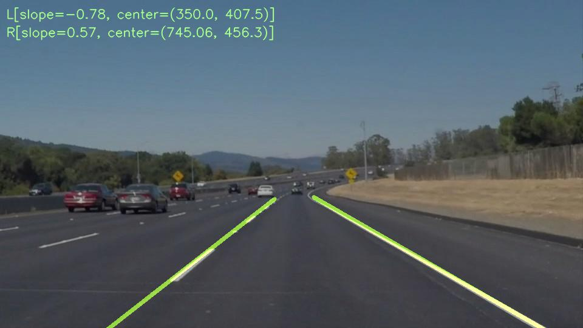
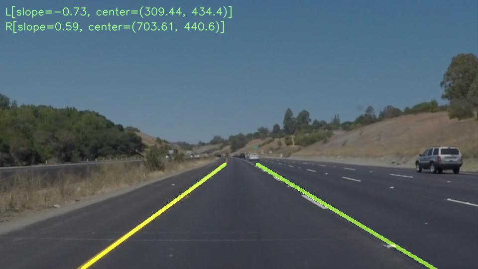

<!DOCTYPE html>
<html>
<head>
  <title>Lane lines i</title>
  <script>
  (function(i,s,o,g,r,a,m){i['GoogleAnalyticsObject']=r;i[r]=i[r]||function(){
  (i[r].q=i[r].q||[]).push(arguments)},i[r].l=1*new Date();a=s.createElement(o),
  m=s.getElementsByTagName(o)[0];a.async=1;a.src=g;m.parentNode.insertBefore(a,m)
  })(window,document,'script','https://www.google-analytics.com/analytics.js','ga');

  ga('create', 'UA-92619527-1', 'auto');
  ga('send', 'pageview');

</script>
</head>
<body>

</body>
</html>

<h1 id="finding-lane-lines-on-the-road"><strong>Finding Lane Lines on the Road</strong></h1>
<h2 id="intro">Intro</h2>
<p>In self-driving car detecting lane lines it is necessary to guide cars in the roads this project shows several techniques needed to achieve this important task. The goal it is to find both left and right lane lines by plotting colored lines over its respective lane lines pixels in the image.</p>
<h2 id="back"><a href="index.html">Back</a></h2>
<p><strong>Finding Lane Lines on the Road</strong></p>
<p>The goals of this project are the following:</p>
<ul>
<li>Process input image and detect lines</li>
<li>Filter detected lines to match the lane lines</li>
<li>Drawn the left and right corresponding lane lines into the image</li>
<li>Make a pipeline that finds lane lines on the road</li>
<li>Apply this pipeline to the test set images and videos provided</li>
<li>Reflect on your work in a written report</li>
</ul>
<hr />
<h3 id="reflection">Reflection</h3>
<h3 id="description">1. Description</h3>
<p>The following steps describe how the pipeline was built.</p>
<ol style="list-style-type: decimal">
<li><p>Detect Image Edges Using canny technique to determine edges over all image, it requires the input image to be of one channel (gray scale), then a gaussian function with some kernel configuration should be apply to remove some noise and finally plug the output of this to canny function.</p></li>
<li><p>Detect lines from Hough Space This step detect lines from a given image, to facilitate it the input image already one with only edges and in addition it receive a mask as region of interest to only focus serching lines in given region. The output it is a collection of lines(two points) of different slopes</p></li>
<li><p>Drawn the lines which overlap on lane lines.</p>
<p>The <code>draw_lines</code> function was exended in order to improve the drawing of the lane lines, the hough lines of given image were filtered to separate right lane lines from left lane lines. Also to filter out noisy lines that does not correspond to the lane lanes. Hough lines with positive slope are right ones and the ones with negative slope are the left ones. Lines wich probably are the ones that overlap the lane lines should have slopes between this range (0.5..0.9) and (-0.5..-0.9) other than those ranges are considered noise.</p>
<p>Having the curated list of lines the next is join all of these by averaging slope and center points. then using this slope(m) and center points (x1, y1) extrapolate the line with the help of this formula (y - y1) = m(x - y1); in turn out thif will lead to only two lines for left and right lanes. I've created a helpers function <code>extrapolate_line</code> and <code>filter_lines</code> to keep code of <code>draw_lines</code> simple and clean as possible.</p>
<p>Sudden movements from the lines between frames were tackle by averaging over all slopes, and centers of all frames, it was necesary to soften the drawn between frames. Also I conrideder only average over the last 100 paramaters which behave well. I did experiments with 10 but lines was shaking a little, then tried 1000 and lines some times get out of the lane, but looks like 100 it is a good value for keep the k last parameters over last frames.</p>
<p>As an improvement to understand what is happening in the image I added the averaged slope and the current center for every frame.</p></li>
</ol>
<p>After work over these 3 steps, now there is a foundations that can be use to create the functions <code>get_canny_edges</code>, <code>detect_lines</code> and <code>drawn_lane_lines</code> which wil join all provided helper functions to detect and draw the lines over the test images as shown above:</p>
<div class="figure">
<p class="caption">alt text</p>
</div>
<div class="figure">
<p class="caption">alt text</p>
</div>
<p>I've tried to play with <code>region_of_interest</code> and <code>HSV</code> format to improve the work above, you can find this code at the very bottom of the notebook.</p>
<h3 id="identify-potential-shortcomings-with-your-current-pipeline">2. Identify potential shortcomings with your current pipeline</h3>
<p>I noted that the slope of different lines vary a lot it makes some times the line to dont' stick exactly in the lane line in some curves.</p>
<p>Other shortcomming could be if the road has shadows and other residual material that is near the lane lines averaging the slopes and center may don't match at all on the lane lines.</p>
<h3 id="suggest-possible-improvements-to-your-pipeline">3. Suggest possible improvements to your pipeline</h3>
<p>I've tried use the function cv2.inRange for filter out colors except yellow and white this way identifying lines coulbe much more easy for canny and hough spaces, but it doesn't show to much improvement since tunning and guessing the color ranges for this seem tricky. An posible improvement should be try to parametrize well this function go get better results.</p>
<p>An other improvement could be figure it out how to adapt automaticaly the bottom and top position of the lines to match the image, for example for challenge video the lines do well but one line is more taller than the other. would be nice have a way to get the lines in same top or bottom level.</p>
